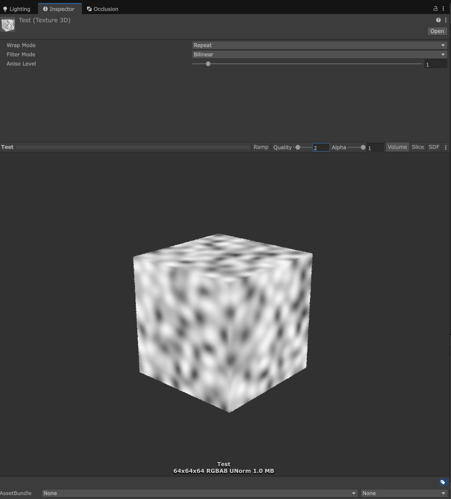
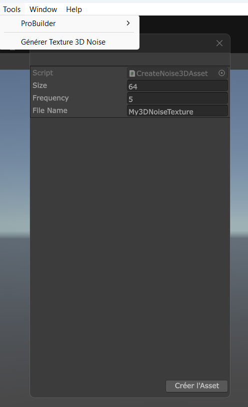
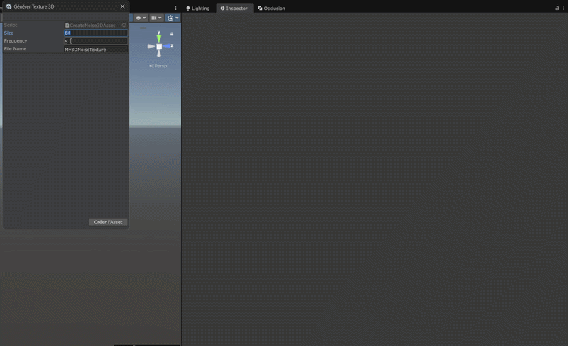

Here are my Tools
Showcasing editor tools and pipelines developed to optimize team workflow and save development time.
Procedural 3D Texture Generator (Unity Editor / C#)
I developed a custom editor wizard tool within Unity to instantly generate volumetric 3D texture assets powered by procedural noise math.

Three-dimensional volume preview of the generated noise inside the Inspector
Objective & Integration
The main goal of this tool was to remove the reliance on external third-party software for creating complex volumetric noise maps, providing a lightweight, in-engine solution to experiment with different resolutions and frequencies on the fly.
- Unity Editor: Built as a custom
EditorWindowutility seamlessly integrated into the editor layout. - Unity Mathematics: Leveraged the mathematical library to generate optimized 3D Simplex noise via the
noise.snoise()function.
Editor Window Configuration
The wizard is accessible from the top menu via Tools → Générer Texture 3D Noise. The user configures the generation through three primary parameters:
| Parameter | Description |
|---|---|
| Size | The cubic resolution of the texture across all three axes (X, Y, Z). e.g., 32³, 64³, 128³. |
| Frequency | Controls the scale and tiling frequency of the noise pattern in 3D space. |
| File Name | The target name for the final `.asset` file saved within the project directory. |

1. Initializing the Texture3D Container
The script instantiates an empty Texture3D container using the user-defined size. It uses the RGBA32 color format. To ensure seamless looping and clean lookups, the filtering is set to Bilinear and the WrapMode is forced to Repeat.
Texture3D texture = new Texture3D(size, size, size, TextureFormat.RGBA32, false);
texture.wrapMode = TextureWrapMode.Repeat;
texture.filterMode = FilterMode.Bilinear;2. Mathematical Simplex Sampling
Using three nested loops (X, Y, Z), the script calculates the normalized local position of every single voxel. Since snoise() outputs values in a -1 to 1 range, a standard mathematical remapping is applied to bring it into a [0, 1] range fit for color grayscale maps.
float3 pos = new float3(x, y, z) / (float)size * frequency;
float noiseValue = (noise.snoise(pos) + 1f) * 0.5f;
colors[index] = new Color(noiseValue, noiseValue, noiseValue, 1f);3. Data Writing & UX Selection Focus
Once the pixel color array is completely populated, the texture changes are finalized via Apply(). The tool writes the native asset into the project folder using the AssetDatabase API.
For optimal user convenience, the script sets the editor's active selection directly to the newly created asset so it pops up instantly in the Inspector window.
texture.SetPixels(colors);
texture.Apply();
AssetDatabase.CreateAsset(texture, path);
AssetDatabase.SaveAssets();
Selection.activeObject = texture;
One-click generation process with automatic asset focus and highlighted inspector selection
Technical Breakdown & Future Outlooks
This tool successfully created an immediate iteration loop for generating noise variants. However, because the computational logic currently runs entirely on the CPU, generation times can scale drastically up when computing higher resolution grids (e.g., 256³).
Project Note: As the pipeline pivoted away from using this specific resource type, further development on the tool was halted. Future steps would have involved shifting the generation mathematical load onto the GPU via Compute Shaders, alongside implementing Worley and Fractal Brownian Motion (FBM) noise algorithms.